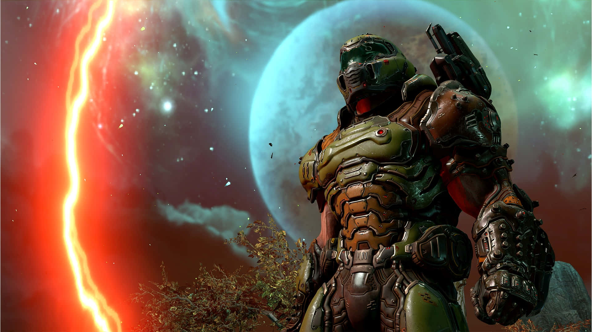
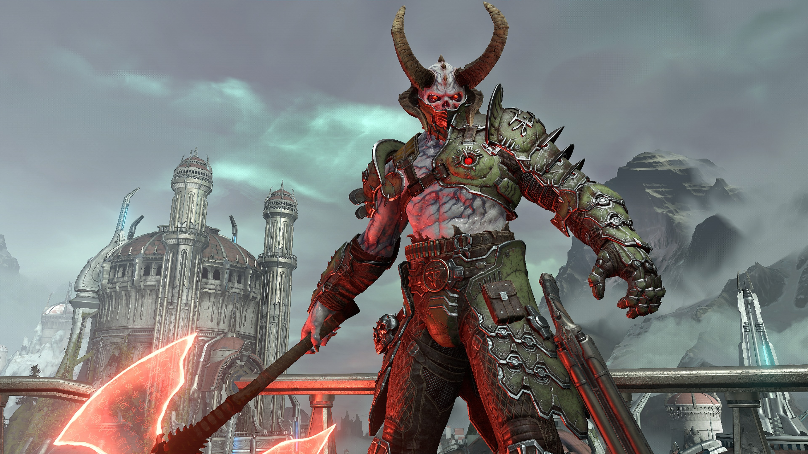
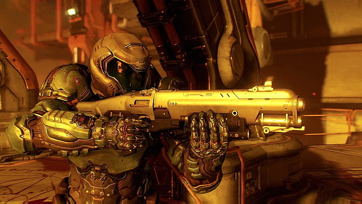
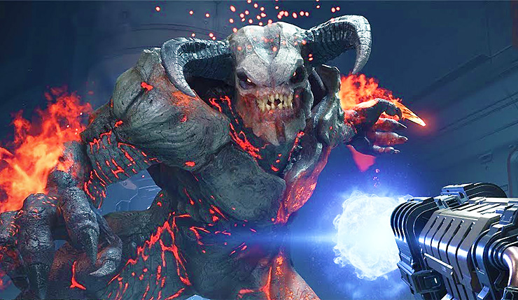
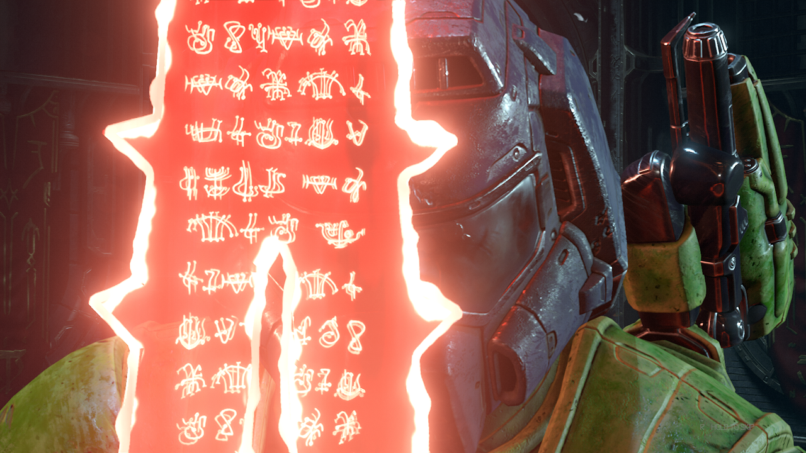
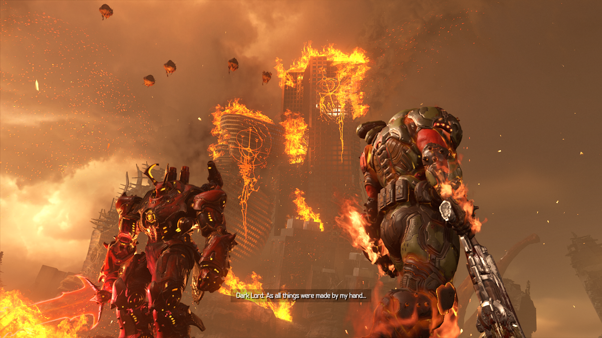

Lao mình vào địa ngục
104 commentDoom Eternal – Trong ngành game hiện đại, hiếm có hiện tượng nào được như Doom (2016). Đây là một bản reboot hoàn hảo khi đội ngũ ở id Software hiểu rõ tại sao những tựa game Doom đầu tiên lại trở thành bất hủ, và mang nó vào kỉ nguyên mới mà vẫn giữ được cái hồn rất “Doom“. Cũng như mở cửa cho những tựa game bắn súng cổ điển mang đậm chất “cổ điển” như Dusk, sự trở lại của Blood hay một công thức mới mẻ như BPM: Bullets Per Minute Tuy nhiên, người viết dù rất thích Doom (2016) nhưng vẫn luôn có cảm giác gì đó thiếu thiếu về nó, một cảm giác rằng đội ngũ id Software đã tiến rất gần sự hoàn hảo, nhưng có gì đó vẫn chưa tới. Và Doom Eternal được công bố, với hàng loạt những tính năng mới khiến người hâm mộ của dòng game “cổ điển” hơi chút chột dạ, nhưng lại làm người viết tràn trề hy vọng, vì liệu những tính năng thêm vào có đẩy Doom Eternal lên tầm cao hơn nữa, nơi mà dòng game FPS lâu đời này xứng đáng có được?
Doom Slayer- Chiến thần địa ngục
Một lần nữa, không cần dài dòng, Doom Eternal “ném” người chơi – vẫn tiếp tục nhập vai anh chàng Doom Slayer, vào giữa địa ngục, xốc lại tinh thần người chơi và nhắc nhở người chơi rằng: đây là Doom! Và sau khi “luyện” lại cơ, Doom Eternal bắt đầu giới thiệu cho người chơi hàng loạt những cơ chế mới khiến cho sự cuồng loạn của game trở nên vui hơn bao giờ hết! Trước tiên, hầu hết các tính năng gốc của Doom (2016) sẽ xuất hiện gần như ngay từ đầu cho người chơi. Anh chàng Doom Slayer sẽ luôn luôn phi như tên bắn trên chiến trường, không chậm lại vì bất cứ thứ gì hết. Độ chính xác khi vừa di chuyển, vừa xả đạn vẫn không đổi. Khiến cho Doomslayer vừa là một thế lực đầy hủy diệt, vừa tinh tế và chính xác như một Hunter trong Destiny. Anh ta có thể nhảy đúp, tiêu diệt những kẻ thù đang yếu máu bằng một diễn hoạt ngắn đầy thỏa mãn, và giờ anh ta còn có thể lướt một cú thật nhanh…
Chính xác là thế, Doom Eternal nay thêm các cơ chế di chuyển mới khiến cho Doom Slayer ngày càng linh động trên chiến trường, giúp người chơi dễ thở hơn khi đối mặt với quá nhiều kẻ thù xả đạn từ khắp mọi hướng – cụ thể là lướt, bám tường và đu xà. Cơ chế bám tường chỉ xuất hiện trong các phân đoạn “platforming”, còn lướt và đu xà trở thành một phần tối quan trọng trong chiến đấu, đặc biệt là với kiểu thiết kế “đấu trường” như Doom, cũng như mở ra hàng loạt những cơ hội di chuyển mới cho phép người chơi khám phá bí mật của mỗi màn chơi một cách… đỡ nhàm chán hơn.
Người chơi sẽ rất cần những cơ chế mới đó, vì kẻ thù trong Doom Eternal đông, dày đặc và nguy hiểm hơn bao giờ hết. Từ rất sớm (thậm chí là ngay từ màn đầu tiên!), người chơi đã bị đặt vào những đấu trường đầy rẫy lũ “bị thịt” đầy nguy hiểm, yêu cầu độ thành thạo lối chơi “áp sát” và “xoay vòng” ở bản 2016 lên tầm cao mới, ví dụ như: Mancubus, những con Cacodemon lơ lửng khạc nhổ và… khoan đã… Pain Elemental? Arachnotron?
Qủy Dữ
Những kẻ thù nguy hiểm xuyên suốt loạt game đã trở lại. Những Pinky, Mancubus, Cacodemon… từ bản 2016 vẫn xuất hiện và lợi hại như xưa, nhưng những kẻ thù mới lại là điểm sáng nhất của Doom Eternal. Từ những “gương mặt thân quen” như Arachnotron, Pain Elemental, Spectre, Arch-Vile… được làm lại để hợp với vòng lặp lối chơi điên cuồng của Doom Eternal, đến những khuôn mặt hoàn toàn mới đầy nguy hiểm như như Dread Knight, Doom Hunter, Blood Makyr… và tất nhiên là ác mộng của rất nhiều “newbie” (tân binh FPS): Marauder. Khi mà hầu hết các ác quỷ từ bản 2016 bê qua đều gần như không có gì thay đổi, thì những gương mặt mới này mới là tâm điểm của Doom Eternal, khi sự hiện diện của chúng sẽ yêu cầu sự tập trung cao độ đến từ người chơi.
Người chơi sẽ bị buộc phải chơi xung quanh chúng, tham chiến hoặc rút lui một cách hợp lý vì ảnh hưởng cực kì rõ ràng của chúng lên chiến trường. Ví dụ như một con Doom Hunter thôi cũng sẽ khiến người chơi “chết tức tưởi” nếu để nó lọt ra khỏi tầm mắt, vì bộ kĩ năng gây rất nhiều sát thương của chúng, và bạn sẽ khó có thể tập trung hoàn toàn vào chúng vì độ “trâu bò” và lũ quái lẻ tẻ xung quanh sẽ tiêu diệt bạn dễ dàng nếu bạn mất quá nhiều thời gian xử lý một con Doom Hunter (và hãy cẩn thận, số lượng Doom Hunter trong một cuộc đụng độ hầu hết là lớn hơn 1 đấy – NV).
Mà không chỉ Doom Hunter nguy hiểm như vậy đâu, còn có Arch-Vile với khả năng triệu hồi những con quỷ được tăng sức mạnh, những Whiplash di chuyển với tốc độ chóng mặt, những Pain Elemental khạc ra Lost Soul hết sức phiền phức, và tất nhiên, anh bạn Marauder – nỗi ác mộng của các tân binh FPS, yêu cầu người chơi phải tiếp cận bằng cách hết sức cụ thể, hoặc không bạn sẽ phải tức tưởi bắt đầu lại chỉ với một sai lầm duy nhất. Và thậm chí những con trùm ở bản trước như Cyber Demon sẽ quay lại với tư cách…. quái thường! Nhìn chung, độ khó của Doom Eternal được nâng tầm lên rất nhiều vì số lượng quái đông hơn, đa dạng hơn và bao quát chiến trường hơn, dù cho hầu hết các con quái này để có một điểm yếu để người chơi có thể tận dụng vô hiệu hóa, ví dụ như khẩu súng lasser của Arachnotron, hay hai khẩu súng phun lửa bự chảng trên tay Mancubus…. Kẻ thù trong Doom Eternal sẽ thực sự trở thành một thử thách thứ thiệt cho mọi người chơi FPS.
Súng ống và địa ngục rực cháy
Không những kẻ thù trong game được nâng cấp dữ dằn như vậy, anh bạn Doom Slayer của chúng ta cũng không thiếu những chiêu trò sẵn trong tay để xử lý chúng! Và tất nhiên, gunplay của một game như Doom là miễn bàn rồi! Với độ nặng và cảm giác đã tay hơn cả các tựa game Wolfenstein mới, giác đầy cơ bắp như các nhân vật Gears of War. Như đã nói ở trên, những cơ chế di chuyển mới sẽ giúp cho người chơi rất nhiều, nhưng những thay đổi về vũ khí và những tiện năng mới của bộ giáp Praetor mới là trọng tâm. Như cũ, hầu hết vũ khí trong Doom Eternal sẽ có hai chế độ bắn phụ (tất nhiên là trừ BFG và Super Shotgun), cho phép người chơi nhanh chóng thay đổi chỉ với một nút bấm, và nâng cấp bằng điểm Weapon Point thu nhập được trong quá trình chơi. Một khi đã nâng cấp đủ chế độ bắn phụ nhất định, game sẽ yêu cầu người chơi phải hoàn thành một nhiệm vụ đặc thù với chế độ đó, từ đó sẽ mở khóa ra sức mạnh “thật” của vụ khí, khiến cho sự tùy chỉnh trong chiến đấu cũng như giá trị chơi lại của game cao hơn.
Các thay đổi này đa phần vẫn trung thành với Doom (2016), như ống ngắm và tên lửa cho Heavy Assault Rifle, nhưng những thay đổi mới lại rất là… thú vị, như Shotgun liên thanh, Plasma Rifle rút máu của *mọi* kẻ thù đến chết…. Với những vũ khí còn lại, thay đổi thú vị nhất của chúng có thể là chiếc Meat Hook của khẩu Super Shotgun, giúp kéo…. người chơi lại gần kẻ thù và tung ra một phát bắn Super Shotgun hủy hiệt!
Không những thế, cơ chế lựu đạn cũng được cải thiện, khi giờ đây người chơi có thể ném bom… băng, đóng băng kẻ thù lại để có thể dễ đối phó với những kẻ thù luôn di chuyển với tốc độ chóng mặt. Phần trọng tâm còn lại của game là những tiện năng trên người Doom Slayer.
Âm thanh và đồ họa
Âm nhạc trong Doom là một thứ gì đó giống như chất kích thích vậy, một khi bạn đã dính vào rất khó để có thể bỏ được. Mình không phải là một tín đồ của dòng nhạc Rock hay Heavy Metal nhưng thực sự sau khi chơi xong Doom và Doom Eternal, mình muốn tìm hiểu thêm khá nhiều về dòng nhạc này. Cảm giác tiếng đạn, tiếng hét của đám quỷ, tiếng bạn rip and tear hòa lẫn với nhạc Heavy Metal khiến cho cảm giác kích thích là điều luôn có được mỗi khi bước vào combat của Doom Eternal. Và điều đặc biệt nhất chính là nhịp độ của nhạc Heavy Metal chính là do người chơi điều khiển, đúng vậy người chơi điều khiển nhịp điệu của nhạc, và đồng thời nhạc sẽ thôi thúc khả năng chiến đấu của người chơi. Ở các độ khó cao, việc cảm nhận nhạc nhanh và dồn dập khiến bạn càng phải hoạt động nhanh hơn nếu không muốn Slayer của bạn lên thiên đàng.
Về đồ họa, mình thấy đồ họa của Doom Eternal làm rất tốt. Nếu như bản 2016 cho mình một không khí có phần u ám đúng nghĩa cô độc trên sao hỏa và địa ngục thì sang Eternal có vẻ mọi thứ có phần tươi sáng hơn một tí, nhưng không vì vậy mà khiến game đi xuống về phần hình ảnh, trái lại nó khắc họa cực tốt hành trình phượt từ trái đất, thiên đàng cho đến những hành tinh khác của Slayer.
Gameplay: 200% công suất não bộ
Gameplay luôn là xương sống, là linh hồn của tất cả mọi tựa game. Một tựa game có thể chẳng có một cốt truyện nào cả, nhưng chắc chắn nó cần gameplay để tồn tại. Và Doom Eternal đã sở hữu cho mình một bộ xương sống trên cả mong đợi.
Nếu như ở bản Doom (2016), mình đã đánh giá cảm giác chiến đầu cực kỳ đã tay, nhịp game cực kỳ nhanh, thì bước sang Eternal cảm giác đó còn được nâng lên gấp nhiều lần. Nhịp game nhanh hơn rất nhiều do Slayer giờ đây cực kỳ cơ động với dash và móc kéo từ khẩu Super Shotgun, bên cạnh bổ s.ú.n.g những thứ làm Slayer trở nên cơ động hơn thì những yếu tố làm cho nhịp chiến đấu trong game chậm lại cũng đã được loại bỏ. Chẳng hạn như ném lựu đạn giờ đây có hẳn 1 khẩu s.ú.n.g tự động gắn ở vai bạn sẽ làm thay bạn điều này, hay như khẩu Pistol mà ở bản 2016 bạn có được đầu game giờ đây đã được xóa đi.
Sự cải tiến trong combat của Doom Eternal đã được làm cực kỳ tốt ở 2 việc, đầu tiên là tính chiến thuật giờ đây đã được đề cao lên nhiều hơn so với bản tiền nhiệm. Ví dụ cơ bản mà bạn có thể thấy rõ nhất chính là việc ở bản 2016, giết quỷ sẽ xoay quanh việc bạn xả đạn, combo gun đến chết đám quỷ hoặc đợi đến khi nó vào ngưỡng máu tử để bạn Rip and Tear, thì giờ đây đám quỷ gần như con nào cũng sẽ có những yếu điểm nhất định và điều quan trọng là bạn có đủ phản xạ để đánh vào điểm yếu đó không mà thôi. Việc biết điểm yếu và tấn công vào điểm yếu của đám demon sẽ giúp cho việc tiêu diệt chúng trở nên dễ dàng hơn rất nhiều, bởi Doom Eternal là 1 game có nhịp độ rất nhanh, ở những độ khó thấp thì bạn sẽ thấy việc tấn công điểm yếu không có gì đáng để bận tâm cho lắm, tuy nhiên khi bắt đầu ở độ khó Ultra Violence hay Nightmare, lúc này đám quỷ sẽ trở nên hung hăng hơn, đông hơn và đặc biệt là sát thương của chúng cũng cao hơn đáng kể, việc biết điểm yếu sẽ giúp bạn dễ thở hơn rất nhiều ở những độ khó này, bởi nếu không thì chỉ cần 1 vài hit thôi Doomslayer có thể sẽ lên thiên đàng bất cứ lúc nào. Yếu tố điểm yếu được đẩy lên cao nhất trong game là khi game giới thiệu cho bạn 1 con quỷ có tên là Marauder, hắn gần như có tất cả những công cụ để khắc chế lại Slayer, tuy nhiên hắn vẫn có điểm yếu nhất định và điều quan trọng là bạn có căn thời gian chuẩn và dụng được điểm yếu đó hay không mà thôi.
Tổng Kết
Doom Eternal không phải là game FPS hay nhất, hoàn hảo nhất, nhưng đôi khi bạn không cần là kẻ giỏi nhất để được mọi người nhớ tới, thứ bạn cần là sự khác biệt giữa ngàn kẻ ngoài kia, và Doom series là một kẻ khác biệt. Thay vì để người chơi núp sau các cover bắn trả hay stealth lén lút để hạ gục kẻ địch thì Doom cho bạn trở thành một vị thần trong chiến đấu, một cơn ác mộng của quỷ dữ, một kẻ mà sẽ nói với lũ quỷ rằng “tao không bị nhốt với chúng mày, chúng mày đang bị nhốt với tao”, những điều đó thôi là đủ để biến Doom Eternal thành một tựa game đáng chơi rồi. Những cải tiến hợp lý, giữ lại những cái chất của dòng game FPS classic, khác biệt trong thị trường game, content tạo giá trị chơi lại cao,... Doom Eternal xứng đáng là một tựa game FPS đáng chơi với dân thích FPS nói riêng và game thủ nói chung. Mình mạnh dạn cho Doom Eternal điểm 9/10, dù cho DLC part 2 vẫn còn có hạn chế nhất định.

topgamer June 21, 2024
Game này chơi phải full công suất 100% mới may ra qua màn được. Nhưng mà cực kì đã.
Replysuperstar_9xSeptember 11, 2023
Game này thì khỏi bàn. Chơi từ hồi bản đầu tiên 1999 tới giờ vẫn thấy mê.
Reply